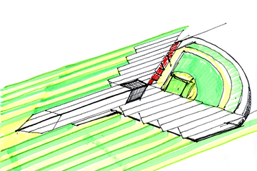

De Garay comenta que el estadio se construirá en un terreno plano de siete hectáreas dentro del circuito de Fórmula 1 en la Magdalena Mixhuca. “Tiene ciertos retos como lograr accesos viales dentro del estadio sin tener que cruzar por encima de la pista”, matiza, al tiempo que nos introduce en la importancia de hacer una experiencia familiar de cada partido. “La nueva casa de los Diablos será un lugar diseñado para las familias, tendrá todas las facilidades y amenidades para que sea un lugar amigable para todos los fans, habrá zonas comerciales, salón de la fama, zonas para hacer pic-nic, plazas y espacios públicos”, agrega.

"Estamos trabajando de la mano con los especialistas en seguridad estructural de la Ciudad de México y con Werner Sobek"
Uno de los temas que más ha preocupado a los aficionados de los Diablos con el nuevo parque es el de los accesos y vías de comunicación, pero Alonso no se altera al responder. “Estamos trabajando de la mano con especialistas en tráfico para evaluar la mejor solución a los temas de estacionamiento y accesos, el estadio está caminando de dos importantes estaciones de metro, lo que ayudará a tener muy buena comunicación con toda la gente que llegue en transporte público. En cuanto al estacionamiento, sí se está pensando en hacer uno techado dentro del estadio, pero no hay que olvidar que el complejo deportivo tiene zonas destinadas a estacionamiento público”. De Garay hace una pausa, le da un trago al vaso de agua que tiene enfrente, fija la mirada en el entrevistador y se adelanta, como si supiera que la siguiente pregunta está relacionada con los temblores. “Lo más importante para nosotros y para los propietarios es la seguridad de la gente, estamos trabajando de la mano con los especialistas en seguridad estructural de la Ciudad de México y a su vez con la prestigiosa firma de ingeniería estructural alemana Werner Sobek, una de las más reconocidas del mundo”, responde con seriedad.
No cabe duda de que Alonso de Garay sabe de qué habla. No sólo sabe, sino que refleja pasión por la arquitectura… y el deporte. Sabe que la entrevista está por concluir, por eso nos da tregua para pensar una última pregunta mientras nos habla de sus pasiones. “Me gustan mucho los deportes, sigo casi todos en la televisión, futbol, beisbol, basquetbol, tenis, pero el que más me gusta desde niño es el soccer, aunque los que practico son el box, padel y el golf”. Nos habla de su música favorita, la clásica, su comida favorita, la mexicana, de sus colores predilectos, neutro, blanco y negro, incluso nos cuenta lo que siente todas las mañanas cuando se pone los guantes de boxeo. “Es una gran forma de liberar tensión y hacer mucho ejercicio”.
Le hacemos la última pregunta, tratando de llegar al origen de su gusto por la arquitectura, con la seguridad de que el proyecto del parque de los Diablos Rojos está en las mejores manos, en las de un despacho de arquitectura que ha digerido el significado de un equipo que nació hace 75 años con el nombre de los Rojos del México, hasta que dos años después, tras ir perdiendo 7-13 en la novena entrada, en una remontada impresionante, anotaron siete carreras y dejaron tendido sobre el terreno al rival, lo que sorprendió a Basilio ‘Brujo’ Rosell, en ese entonces el estelar pitcher cubano, quien exclamó: “Estos Rojos juegan como diablos”, y ahí nació el nombre de una gran familia.
“¿Tuviste algún juguete de niño que hoy te remita a la arquitectura?”, le preguntamos. Alonso, mira hacia arriba, y responde: “Sí, desde que era muy chico tenía una gran canasta llena de cubos de madera, ese era junto con cualquier tipo de pelota mi juguete favorito, jugaba a hacer con cubos las torres más importantes del D.F, en esa época el Hotel de México, el edificio de Mexicana, la Torre de Pemex, y la Torre Latinoamericana”. Alonso, aquel pequeño que veía todos los partidos de los Dodgers de Valenzuela, ahora construirá la única casa propia que ha tenido el equipo más importante en la historia del beisbol de México.
;){kind=link}